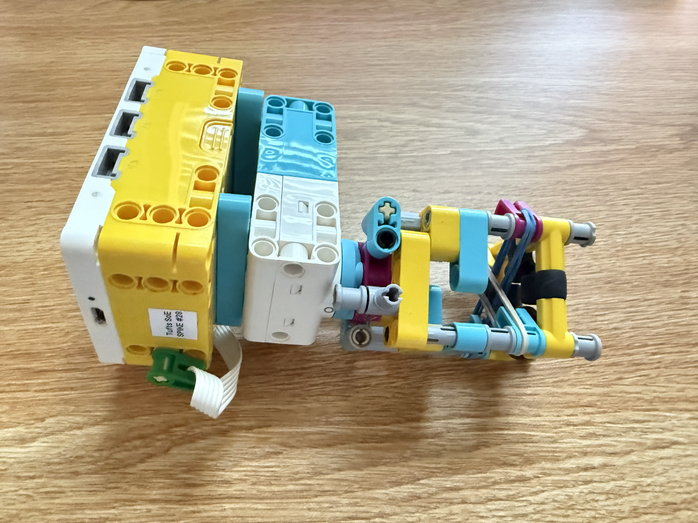

It was very efficient at moving 2 nuts at once. The rubber band held the top nut to the bottom nut, preventing it from slipping out, and the bottom nut is held by rubber pieces. However, when it was used to remove one nut at a time, it was less effective since the one nut is only held in place by the rubber pieces, causing it to slip and not align with the bolt when moved.